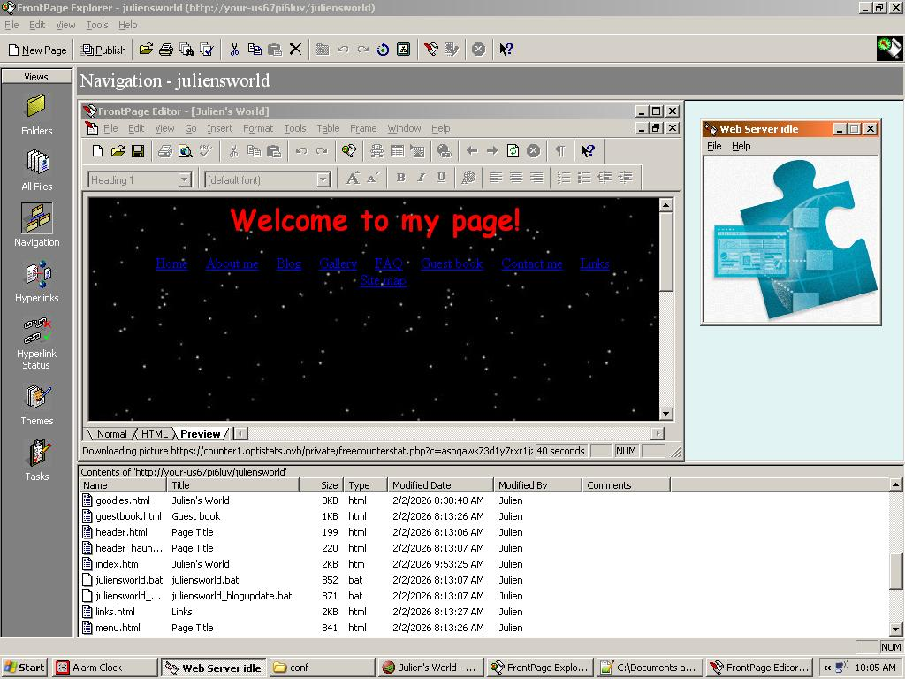
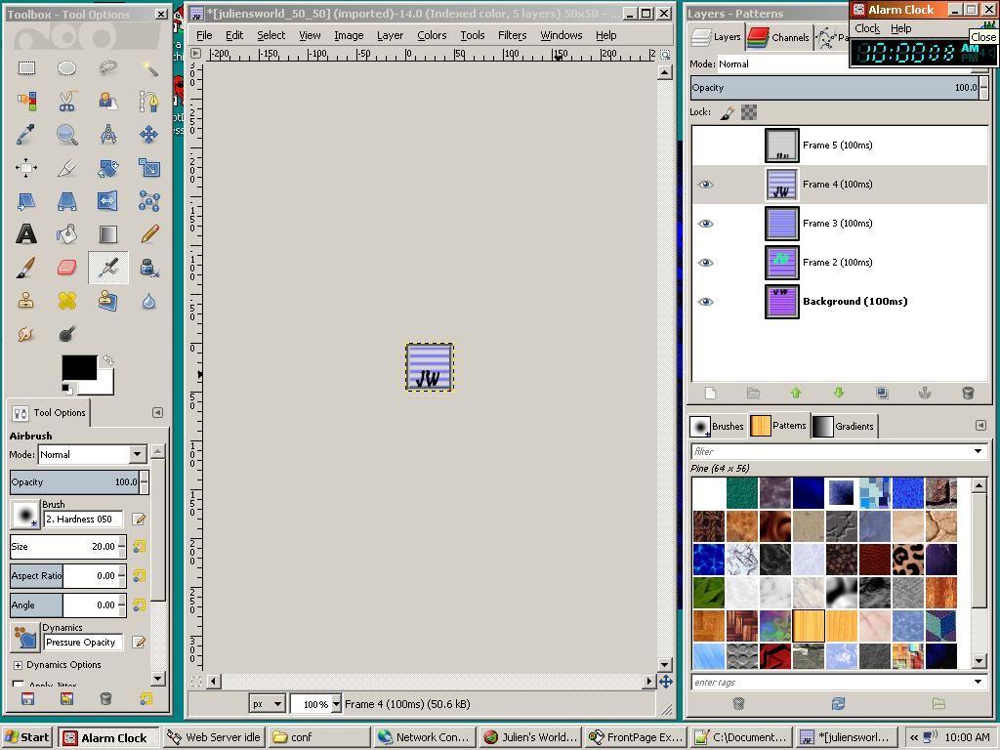
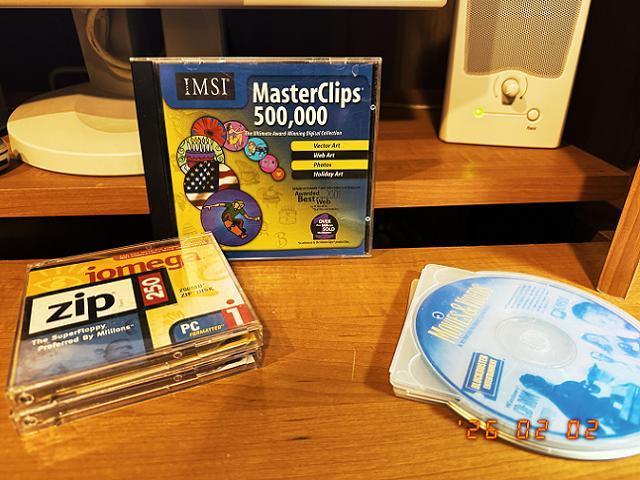

My name is Julien and I am the webmaster, and web designer for juliensworld.com, official website of JulesNet 2000 ©. JulesNet is an internet startup that was founded in 1995 to address the growing demand in personal and commercial web sites. I built this web page using standard web design tools:
- Microsoft FrontPage 98
- Gimp 2
 
Being a web designer means I am also proficient with the latest computer software:
- Microsoft Word 97
- Microsoft Works 4.5
- Lotus SmartSuite 97
- Encarta Encyclopedia 97
Ever since the dot-com bubble, finding work can be tough. A web page can help showcase your skills as a web designer during a grueling interview process.
Remember one thing: Web design is an art. FrontPage 98 is our canvas, and HTML is our paint. Here are a few tips to get you started:
- Create a home page and include a MIDI file to play in the background. That's one of many ways of enhancing user experience.
- Load your pages with GIFs to keep the user engaged. If you're a beginner, you can download free GIFs from GeoCities. If you know what you're doing, you can create your own GIFs using Gimp or Photoshop.
- You can also browse a large library of GIFs offline by purchasing professional software such as MasterClips 500,000:

- Cross-browser compatibility is important. There are many Web browsers available but many designers will only test with the most popular ones such as NetScape Navigator. Make sure you also test on America Online.
- Make sure to include must-have features such as a Site Map that will make hard to find pages more accessible.
- Tables and iFrames should be used extensively to separate content areas on your page such as the menu, the banner, and the main content. FrontPage buttons should be proudly displayed on the bottom right corner of your homepage.
Favorite TV show: The X-Files